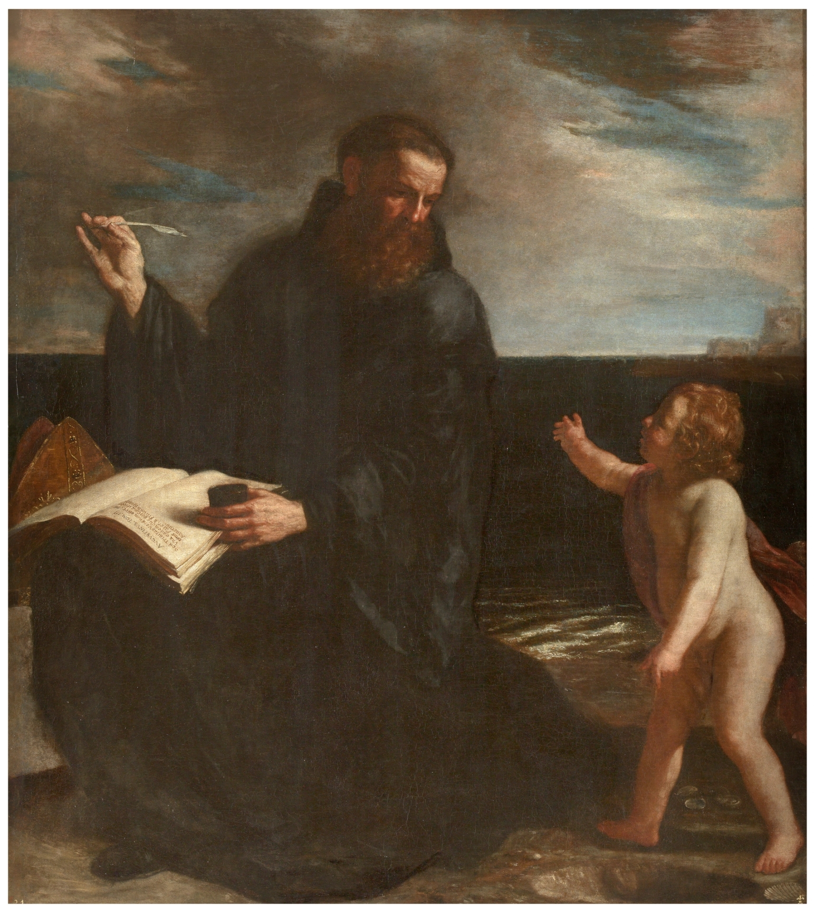

Según la historia del santo, éste se encontraba paseando a la orilla del mar meditando sobre el misterio de la Trinidad cuando vio a un niño llenando un hoyo en la arena con el agua del mar. San Agustín le preguntó por qué lo hacía, a lo que el niño respondió que intentaba vaciar todo el agua del mar en el agujero. Al escucharlo, el santo dijo al niño que aquello era imposible, a lo que éste respondió que si aquello era imposible, más imposible aún era tratar de descifrar el misterio de la Santísima Trinidad.